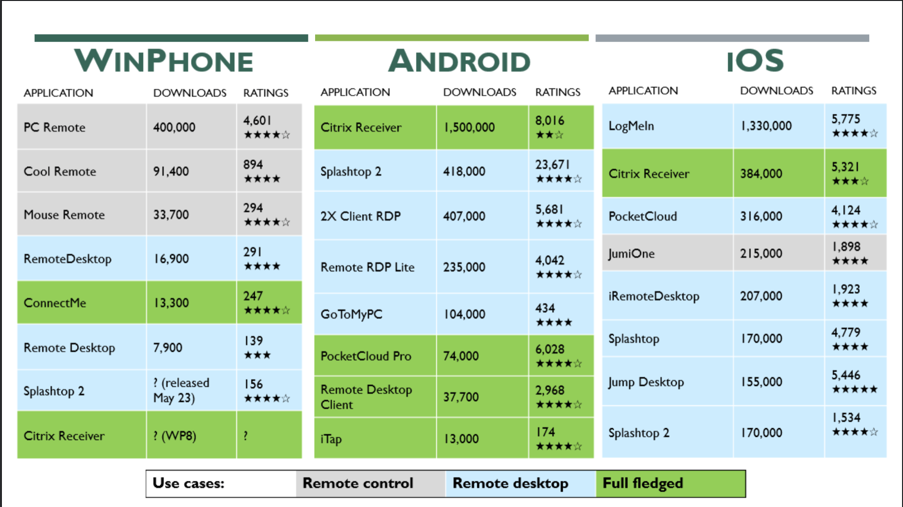

Windows Phone Remote Desktop App
Summary
Wrote the product requirements document for Microsoft's Remote Desktop app on Windows Phone. Worked cross functionally and prototyped user interactions and flows.
Team members:
just meCollaborated with:
engineers, PMs, designers, researchers, usersTimeline:
12 weeksUX design product management prototyping use cases user research competitive analysis spec writing
As a Program Manager Intern on the Remote Desktop team, I was the end user’s advocate. I was responsible for understanding our users, their needs, and priorities to design a great UX for the new Windows Phone app. I started off by evaluating 24 competitor remote desktop apps on Windows Phone, Android, and iOS.
Although all the apps offered remote functionality, some showed the user their desktop and some had a mouse/touch interface to control their computer from afar. I depicted this, along with app popularity and ratings, in the graphic below.
Out of those apps, I downloaded the 10 most popular apps to thoroughly analyze their functionality and UX. I documented which apps offered which specific features in a visual format (below).

From there, I read over 1000 app store reviews across Android, iPhone, and Windows Phone platforms. I also interviewed a few DBAs who frequently use Remote Desktop on their mobile phones. Through harnessing all of this qualitative data, I identified and prioritized 29 use cases, along with a few user scenarios.

The data also surfaced two main pain points: it was difficult to navigate around the Desktop and enter input not built-in the Windows Phone keyboard.
Users could navigate two different ways: (1) use a virtual mouse or (2) use touch gestures. Most apps offered both; touch generally worked better for users.
I prototyped how different touch gestures would work, specifically for panning, zooming, and accessing the Windows Charms Bar.
insert gif here
The second pain point occurred when users couldn’t access Ctrl, Alt, F1, etc. - keys not supported by the standard Windows Phone OS. However, a significant amount of users were power users who frequently utilize keyboard shortcuts.
To address entering non-standard keyboard input, I conducted a quick survey to identify which additional keys needed to be commonly accessed. Which keys supported our use cases? Turns out, the top keys were the Windows key, Ctrl, Tab, and arrow keys.

My suggestions -
- Maximize visibility: 5 out of 10 existing apps waste screen space by not supporting screen rotation (portrait -> landscape mode). Avoid permanently fixed toolbars and buttons as they can block access to important controls.
- Swift access: users should be able to connect quickly; barriers to connecting cause frustration and confusing. Top complaint is a laggy user experience.
- Simplicity: a few instructions rather than lengthy descriptions. Minimize number of customizations in set up flow. Offer less options than on desktop- too many customizations slow down the task flow.
What could be improved -
- There are better methods to capture which keys are commonly used with the Remote Desktop app. Next time, I would set up keystroke logging on users machines’ and then quantitatively discover which keys are truly crucial.